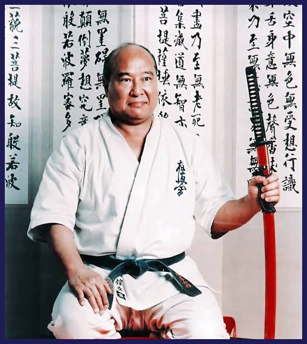

O Karatê Kyokushin, ou "Karatê de Contato", é um estilo de karatê criado pelo mestre Masutatsu Oyama nos anos 1950. Ele enfatiza combates com contato total e a resistência física, sendo um dos estilos mais rigorosos e desafiadores. Os praticantes, conhecidos como karatecas, treinam técnicas de autodefesa, força e disciplina através de golpes poderosos e exercícios intensos. Diferente de outros estilos, o Kyokushin permite contato pleno no corpo (exceto na cabeça), simulando situações reais. Isso fortalece a autoconfiança e a preparação mental e física para desafios.
.
Luiz Felipe Cavalcante Marques
Aústerio Neto
Aústerio Filho
Francisco Filho
Hajime Kazumi
Hitoshi Kiyama
Kenji Midori
Kenji Yamaki
Shokei Matsui
Terutomo Yamazaki
Valeri Dimitrov
Masutatsu Oyama (nome de nascimento: Choi Young-Eui), nascido em 27 de julho de 1923, em uma região da Coreia que então fazia parte do Japão, é amplamente conhecido como o fundador do Karatê Kyokushin, um dos estilos de karatê mais intensos e famosos por seu contato pleno. Desde jovem, Oyama foi exposto às artes marciais. Aos 15 anos, mudou-se para o Japão, onde treinou em judô, boxe e karatê. Ele começou a estudar sob Gichin Funakoshi, o fundador do Karatê Shotokan, e logo se destacou por sua dedicação e aptidão nas artes marciais.
Treinamento Intenso e Isolamento Oyama acreditava que o verdadeiro poder nas artes marciais vinha de um treinamento físico e mental rigoroso. Na década de 1940, ele se isolou nas montanhas para realizar um treinamento extremo de 18 meses, inspirado por práticas antigas de aperfeiçoamento. Esse retiro montanhoso foi decisivo para o desenvolvimento de sua filosofia e estilo de luta, fundamentados na resiliência e força de vontade. Durante esse tempo, Oyama submeteu-se a condições desafiadoras, realizando diariamente exercícios físicos intensos e meditação para fortalecer corpo e mente.
Feitos Notáveis e Demonstrações de Força Famoso por sua força e habilidades extraordinárias, Oyama realizou diversas demonstrações públicas para mostrar a eficácia de sua técnica e resistência, como o famoso "teste do touro" em que ele enfrentava e derrotava touros, chegando a matar três com golpes únicos. Suas exibições ajudaram a difundir a fama de sua técnica e do Kyokushin, mostrando a força física e a coragem exigidas por este estilo.
Criação do Karatê Kyokushin Após anos de treinamento e experiência em combates, Oyama fundou o Kyokushin em 1953, buscando promover um karatê que fosse eficaz em situações de combate real. O termo Kyokushin significa "a verdade última", e o estilo enfatiza o contato total em lutas, o que o diferencia de outras modalidades de karatê. O sistema que Oyama criou prioriza golpes fortes e diretos, que requerem grande resistência física e mental, além de uma disciplina rigorosa.
Filosofia e Legado Oyama estabeleceu uma filosofia de vida baseada na busca pela autossuperação e no respeito ao próximo. Em vez de apenas vencer, o Kyokushin Karatê busca desafiar os limites físicos e mentais de cada praticante. Seu livro This is Karate se tornou um clássico das artes marciais, transmitindo sua filosofia e método de treinamento.
Mas Oyama morreu em 1994, mas seu legado continua vivo. O Kyokushin é hoje praticado em mais de 120 países, conhecido por seu rigor e pela comunidade que construiu, que enfatiza o respeito, a coragem e o autoconhecimento.